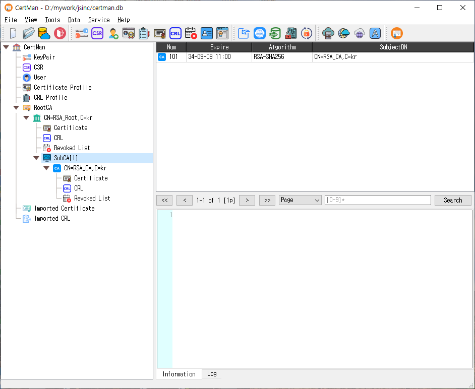

CertMan
CertMan is a desktop application for managing X.509 certificates and related PKI data. It helps users generate and inspect key pairs, certificate signing requests (CSRs), certificates, and certificate revocation lists (CRLs), and organize those records in a database. It also includes tools for certificate profiles, revocation workflows, importing and exporting data, and running selected PKI services.

Downloads
The project currently identifies its application version as 2.3.4. The platform packages below are linked from the project's download page:
- Download CertMan 2.3.4 for Windows 64-bit
- Download CertMan 2.3.4 for macOS
- Download CertMan 2.3.4 for Linux 64-bit
See the CertMan release and update history for version information. Package availability and supported operating-system details are maintained by the project.
What you can do
Manage PKI records
CertMan stores and organizes PKI information in a database. A typical workflow is to create or open a database, generate or import a key pair, define a certificate profile, create a CSR, and then issue, import, inspect, export, renew, or revoke certificates as needed. Certificate and CRL profiles let you configure the contents of generated artifacts for different use cases.
The application includes record management for key pairs, requests, certificates, CRLs, users, signers, and related CA and profile information. It can also import data or retrieve data through supported URIs. Available record types and operations can depend on the installed edition.
Create keys, requests, certificates, and CRLs
The Tools menu provides commands for generating key pairs, making certificate requests, registering users, creating certificate and CRL profiles, issuing certificates, creating CRLs, revoking certificates, and opening CA and profile managers. Supported cryptographic algorithms depend on the application build and license; the source includes RSA, ECDSA, DSA, EdDSA, SM2, ML-DSA, and SLH-DSA paths.
Exchange and protect data
The Data menu includes import, retrieval from a URI, LDAP publishing, and private-key password tools. Some actions require a licensed edition. The application also supports integration settings for services such as LDAP, KMIP, OCSP, CMP, TSP, REG, and SCEP, depending on edition and configuration.
Run PKI services
The Service menu contains TSP, OCSP, CA, and ACME service dialogs. These let an operator configure a listener, select the relevant signing or TLS certificates and keys, and start or stop the service. Service controls may be unavailable in the unlicensed edition. The separate Server menu provides additional server tools in editions that include them.
Main window menus
| Menu | Main purpose |
|---|---|
| File | Create, open, or connect to a database; open recent files; log out or quit. |
| Tools | Generate and manage keys, requests, profiles, certificates, CRLs, users, and CA-related records. |
| Data | Import, retrieve, publish, and manage data and private-key passwords. |
| Server | Open supported protocol server tools when available in the installed edition. |
| Service | Configure and control TSP, OCSP, CA, and ACME services. |
| Help | Open settings, license information, issue reporting, Q&A, and About. |
The menus and enabled actions vary with edition, license state, and build configuration. Use Help > License Information in the application to review license status.
Suggested getting-started workflow
- Install the package for your operating system and launch CertMan.
- Use File > New to create a database, or File > Open to open an existing one.
- Generate a key pair from Tools > New keypair, or import an existing key and certificate.
- Create a certificate profile and make a CSR, or use an existing CA and profile to issue a certificate.
- Review the resulting records in the main window, then export or publish them as required.
- For a service workflow, configure its certificates, keys, profile, and listener in the appropriate Service dialog before starting it.
Licensing and help
CertMan has licensed and unlicensed editions, and some algorithms, data operations, and service features may be limited by edition. Consult the application’s License Information dialog for current status and available license actions. A free trial license may be requested through the license registration page.
- Project issue tracker for bug reports
- Project discussions for questions and answers
- Project update history